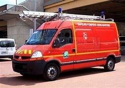
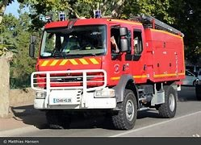

Présentation du centre Le centre Le centre de secours de Hazparne a été créé en 1924. Le 30 juillet 1924 le Préfet des B.P. autorise la création de la section des sapeurs pompiers à l'effectif de 12 hommes dont un sergent, un caporal et un clairon ou tambour. Il est composé de X sapeurs-pompiers, tous volontaires répartis en 4 équipes de garde afin d'assurer les interventions 24h/24h et 365 jours par an. Le centre dispose de 4 véhicules : 1 VTU, 1VLR, 1 CCR et 1CCGC  